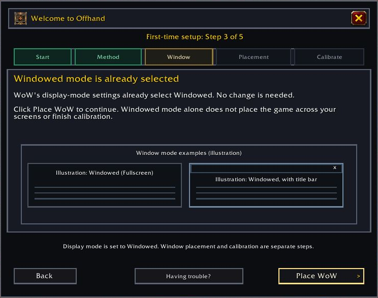

Configure WoW Windowed mode
Use this step after installing Offhand and choosing how you want to place the game window. Before resizing WoW, save a copy of your Edit Mode layout if available and back up your UI addon profiles.
Set the display mode
- Enter the world and open
/offhand guide. Follow your chosen method to the Window step. - Choose Set to Windowed if offered. You can also open WoW’s graphics settings, select Windowed under Display Mode, and apply the change. Windowed (Fullscreen) fills one screen and prevents manual resizing.
- Return to the guide. When it confirms Windowed mode, click Place WoW. The game can still be on one screen at this point.

Continue with your placement method
Keep the in-game guide open. Use the instructions for the method you already selected.